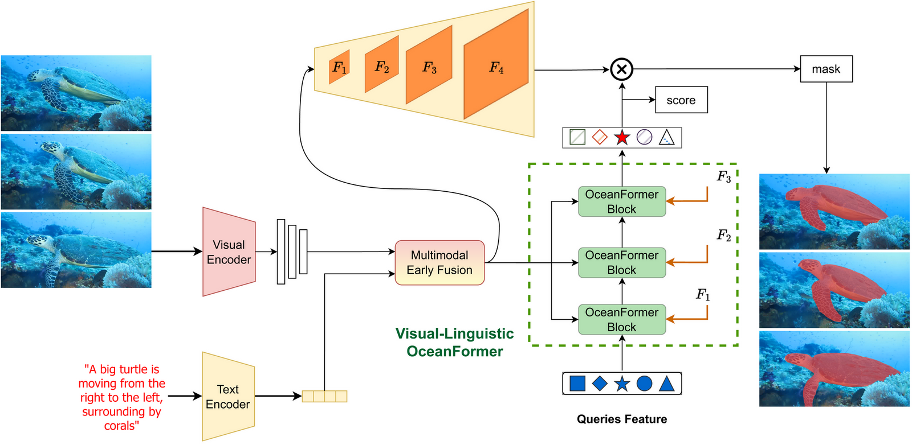

The Hong Kong University of Science and Technology
#Equal contribution
OCEANS 2023 Limerick Conference
Overview of Marine Video Retrieval System.
Abstract
Building a video retrieval system that is robust and reliable, especially for the marine environment, is a challenging task due to several factors such as dealing with massive amounts of dense and repetitive data, occlusion, blurriness, low lighting conditions, and abstract queries. To address these challenges, we present MarineVRS, a novel and flexible video retrieval system designed explicitly for the marine domain. MarineVRS integrates state-of-the-art methods for visual and linguistic object representation to enable efficient and accurate search and analysis of vast volumes of underwater video data. In addition, unlike the conventional video retrieval system, which only permits users to index a collection of images or videos and search using a free-form natural language sentence, our retrieval system includes an additional Explainability module that outputs the segmentation masks of the objects that the input query referred to. This feature allows users to identify and isolate specific objects in the video footage, leading to more detailed analysis and understanding of their behavior and movements. Finally, with its adaptability, explainability, accuracy, and scalability, MarineVRS is a powerful tool for marine researchers and scientists to efficiently and accurately process vast amounts of data and gain deeper insights into the behavior and movements of marine species.
The Retrieval module of our MarineVRS is responsible for returning relevant videos to a user based on their query. However, in order to make this process efficient and scalable, we split the retrieval module into two stages: the indexing stage and the retrieval stage.
Our Explainability Module

It takes a video from Retrieval module's output as an input for Visual Encoder and a text prompt for CLIP Text Encoder. The extracted visual and text features are fused by Multimodal Early Fusion before feeding into Visual-Linguistic OceanFormer to get final segmented masks.
Some examples
Citation
@inproceedings{tsha2023marinevrs,
title={MarineVRS: Marine Video Retrieval System with Explainability via Semantic Understanding},
author={Tan-Sang Ha, Hai Nguyen-Truong, Tuan-Anh Vu, Sai-Kit Yeung},
booktitle={Proceedings of OCEANS 2023 Limerick},
year={2023}
}
Acknowledgements
This research project is partially supported by an internal grant from HKUST (R9429), the Innovation and Technology Support Programme of the Innovation and Technology Fund (Ref: ITS/200/20FP), and the Marine Conservation Enhancement Fund (MCEF20107). The website is modified from this template.